Inhalt Index DeskTop Bronstein

 Dynamische Systeme und Chaos Bifurkationstheorie, Wege zum Chaos Bifurkationen in Morse-Smale-Systemen Lokale Bifurkationen nahe Ruhelagen
Dynamische Systeme und Chaos Bifurkationstheorie, Wege zum Chaos Bifurkationen in Morse-Smale-Systemen Lokale Bifurkationen nahe Ruhelagen


Betrachtet wird eine parameterabhängige Differentialgleichung
mit 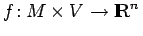, wobei  und 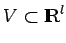 offene Mengen darstellen und f als r-mal stetig differenzierbar vorausgesetzt wird. Die Gleichung (17.17) läßt sich als parameterfreie Differentialgleichung 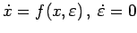 im Phasenraum M x V interpretieren. Aus dem Satz von PICARD - LINDELÖF und dem Satz über die
und 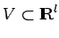 offene Mengen darstellen und f als r-mal stetig differenzierbar vorausgesetzt wird. Die Gleichung (17.17) läßt sich als parameterfreie Differentialgleichung 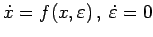 im Phasenraum M x V interpretieren. Aus dem Satz von PICARD - LINDELÖF und dem Satz über die
Differenzierbarkeit nach den Anfangswerten folgt, daß (17.17) für beliebige 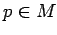 und 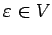 eine lokal eindeutige Lösung 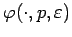 mit Anfang p zur Zeit t=0 besitzt, die bezüglich p und  dann r-mal stetig differenzierbar ist. Alle Lösungen mögen auf ganz
dann r-mal stetig differenzierbar ist. Alle Lösungen mögen auf ganz  existieren.
existieren.
Es wird weiter vorausgesetzt, daß System (17.17) bei  die Ruhelage x = 0 besitzt, d.h., es gelte 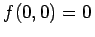. Es seien 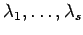 die Eigenwerte von 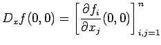 mit Re
die Ruhelage x = 0 besitzt, d.h., es gelte 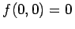. Es seien 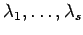 die Eigenwerte von 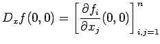 mit Re . Außerdem habe Dxf(0,0) genau m Eigenwerte mit negativem und k=n-s-m Eigenwerte mit positivem Realteil.
. Außerdem habe Dxf(0,0) genau m Eigenwerte mit negativem und k=n-s-m Eigenwerte mit positivem Realteil.
Nach dem Satz über die Zentrumsmannigfaltigkeit für Differentialgleichungen (Satz von SHOSHITAISHVILI) (s. Lit. 17.11) ist die Differentialgleichung (17.17) für  mit hinreichend kleiner Norm 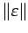 in einer Umgebung von 0 topologisch äquivalent zu einem System
mit hinreichend kleiner Norm 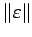 in einer Umgebung von 0 topologisch äquivalent zu einem System
mit 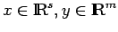 und 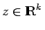, wobei A eine Matrix vom Typ (s,s) ist, die als Eigenwerte hat, und g eine Cr-Funktion mit g(0,0) = 0 sowie Dxg(0,0) = 0 darstellt.
Aus der Darstellung (17.18) folgt, daß Bifurkationen von (17.17) in einer Umgebung von 0 ausschließlich durch die Differentialgleichung
beschrieben werden. Die Gleichung (17.19) stellt die auf die lokale Zentrumsmannigfaltigkeit
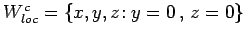 von (17.18) reduzierte Differentialgleichung dar.
Die reduzierte Differentialgleichung (17.19) kann oft durch eine nichtlineare parameterabhängige Koordinatentransformation, die die topologische Struktur ihres Phasenporträts nahe der untersuchten Ruhelage nicht ändert, auf eine relativ einfache Form (z.B. mit Polynomen auf der rechten Seite) gebracht werden, die Normalform heißt. Eine Normalform läßt sich nicht eindeutig bestimmen; in der Regel wird eine Bifurkation durch unterschiedliche Normalformen äquivalent beschrieben.